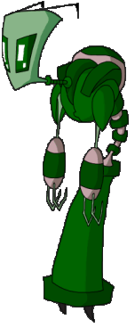

|
 |
Almighty Tallest |
|
The tallest of the Irkens are made leaders of the empire. They host major events such as the Great Assigning and the Planetary Sweeps, but they usually just get pampered. The current Tallest, Red and Purple, spend most of their time eating snacks, but previous Tallest were most likely more productive. The Tallest looses his or her position as the leader of the empire when another Irken gets taller than them or they die. The past two Tallest, Miyuki and Spork, both died at the hands of Zim (though by accident), allowing Red and Purple to become Tallest. Red and Purple are both Tallest because they are exactly the same height. Red and Purple have custom colorized suits that match their eye color, so the Irken I have drawn to the left is what the color scheme for a green eyed Tallest may look like. The Tallest have hover belts equipped in their suits, allowing them to float around. The Tallest also have only 2 fingers. It is apparently cut off in a ritual to become the Tallest, in order to show that they can rule the Empire with only two fingers. |
{kind=link}